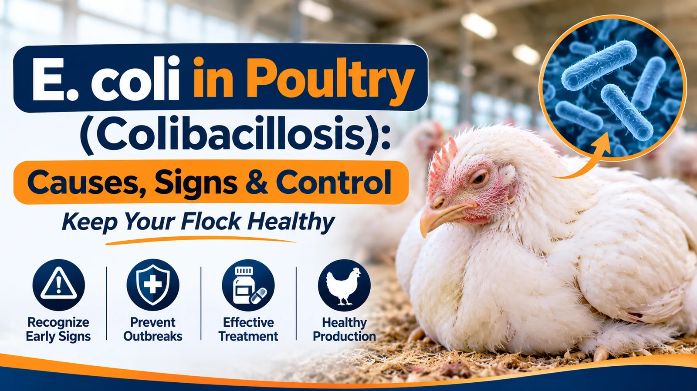
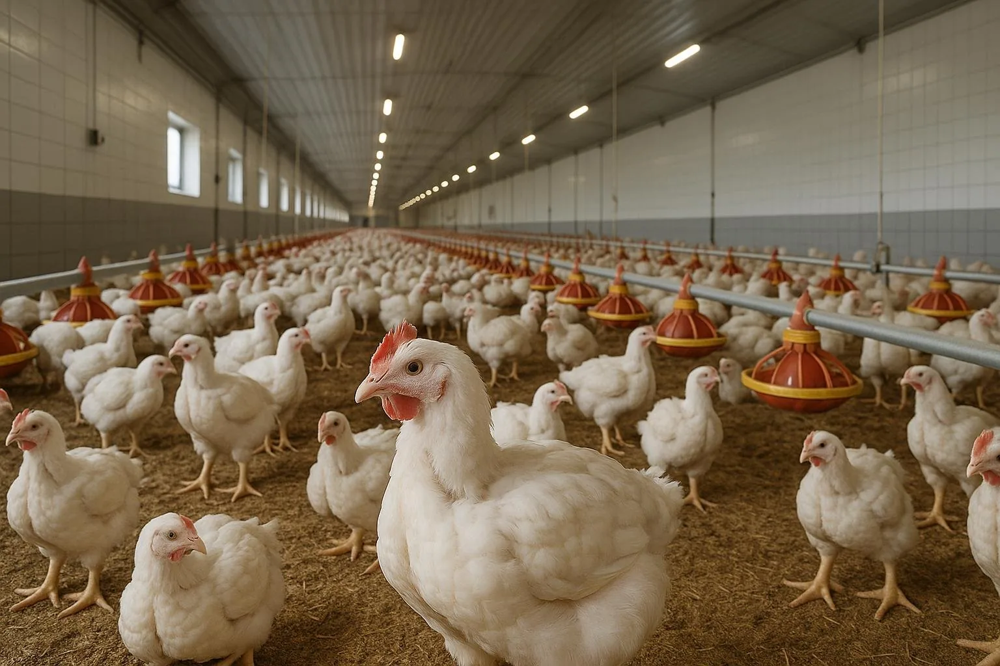

Home / News & Media / Article

Every winter, poultry farmers across Pakistan see the same thing: birds sneezing, rattling breath at night, feed intake dropping and mortality creeping up. In most cases the cause is Chronic Respiratory Disease, better known as CRD. Here is why it gets worse in the cold months and what you can do about it.
CRD is a respiratory infection caused mainly by Mycoplasma gallisepticum. It spreads from bird to bird through the air and through dust, equipment and people. It can also pass from breeder hens to chicks through the egg.
On its own, mycoplasma causes a slow, mild disease. The real damage comes when it combines with E. coli or viral infections such as Newcastle disease or infectious bronchitis. This is called complicated CRD, and it is where most losses happen.
• Poor ventilation.Farmers close curtains to keep sheds warm, which traps moisture and dust.
• Ammonia build-up.Wet litter releases ammonia, which damages the lining of the airways and lets infection in.
• Cold stress.Sudden temperature drops at night weaken the birds’ immunity.
• Fog and smog.Poor outdoor air quality in Punjab adds to the pressure on the respiratory system.
• Sneezing, coughing and a rattling sound when birds breathe, most noticeable at night
• Watery or sticky discharge from the nostrils and eyes
• Swollen face or sinuses
• Reduced feed and water intake
• Poor weight gain in broilers
• A drop in egg production and eggshell quality in layers
If you see these signs, contact your vet early. A post-mortem can confirm CRD and show whether E. coli is also involved, which changes the treatment.
• Balance warmth and fresh air.Keep the shed warm, but ventilate enough that you cannot smell ammonia at bird level.
• Keep the litter dry.Fix leaking drinkers and turn or replace wet litter quickly.
• Buy chicks from mycoplasma-free breeders.Ask your hatchery about their breeder flock testing.
• Follow a vaccination programmefor Newcastle disease and infectious bronchitis, as advised by your vet.
• Tighten biosecurity.Limit visitors, disinfect equipment and practise all-in, all-out stocking.
• Support immunitywith vitamins and electrolytes during cold snaps and after vaccination.
CRD is treated with antibiotics that work against mycoplasma, such as macrolides (tylosin, tilmicosin) and tetracyclines (doxycycline). Mucolytics such as bromhexine help birds clear thick mucus from the airways, so the medicine reaches the infection.
Symans products used for CRD include:
• Symotil: tilmicosin 250 mg/ml, for respiratory infections caused by mycoplasma and pasteurella
• Symodox T: tylosin and doxycycline liquid
• Tylodox: tylosin and doxycycline powder, for CRD, mycoplasmosis and infectious coryza
• Bromodox: tylosin, doxycycline and bromhexine in one, for CRD with heavy mucus
• Bromo-10: bromhexine on its own, to support breathing alongside antibiotic treatment
Always use antibiotics on a vet’s advice, follow the dose on the label and respect the withdrawal period before selling meat or eggs.
CRD is easier to prevent than to treat. Good ventilation, dry litter and a sound vaccination programme will save you more money than any medicine. When an outbreak does happen, act early and treat with your vet’s guidance.
Browse the full Symans poultry range or contact our team for advice.
Share: Facebook · X · LinkedIn · WhatsApp